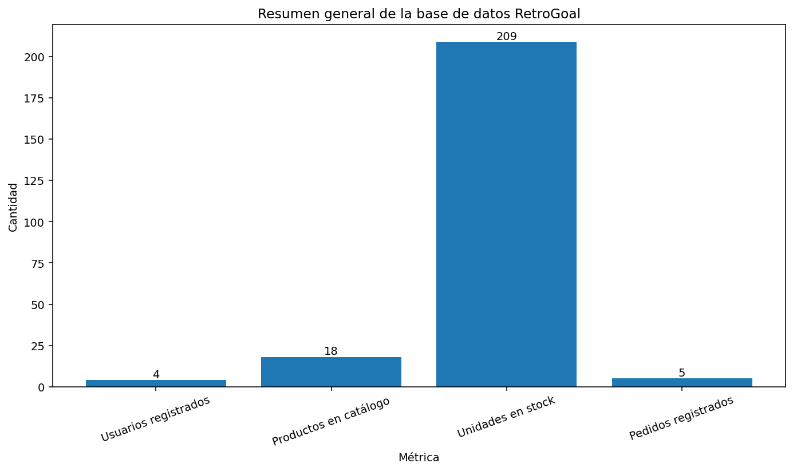

Descripción del proyecto
RetroGoal es una aplicación web desarrollada con Spring Boot para la venta de camisetas de fútbol retro y actuales. El proyecto incluye catálogo de productos, carrito, autenticación de usuarios, checkout con Stripe, panel de administración, mapa con Google Maps e internacionalización.
Tecnologías utilizadas
- Java 17
- Spring Boot
- Spring MVC
- Spring Security
- Spring Data JPA
- MySQL
- Thymeleaf
- Bootstrap 5
- Stripe Checkout
- Google Maps API
- Python para analítica básica de base de datos
Paleta de colores
La identidad visual de RetroGoal se basa en una interfaz oscura, con fondo azul muy oscuro, tarjetas oscuras, texto claro y acentos en azul cian.

Tipografía
RetroGoal utiliza una pila tipográfica sans-serif del sistema:
'Segoe UI', Tahoma, Geneva, Verdana, sans-serif.

Componentes de interfaz
La interfaz se organiza mediante componentes reutilizables como navbar, hero principal, tarjetas de producto, footer, formularios y sección de mapa.

Analítica con Python
El proyecto incluye un script Python que se conecta a la base de datos MySQL y genera una gráfica resumen con usuarios registrados, productos del catálogo, unidades en stock y pedidos.
Para actualizar la gráfica se debe ejecutar manualmente:
python scripts/analisis_retrogoal_bd.py

Estructura del repositorio
retrogoal/ ├── src/ │ └── main/ │ ├── java/ │ └── resources/ │ ├── static/ │ │ ├── css/ │ │ └── images/ │ ├── templates/ │ └── application.properties ├── scripts/ │ └── analisis_retrogoal_bd.py ├── docs/ │ ├── index.html │ └── img/ ├── pom.xml └── README.md
Cómo ejecutar el proyecto
GitHub Pages solo muestra esta documentación estática. La aplicación real de RetroGoal necesita ejecutarse con Spring Boot.
mvn spring-boot:run
Después se accede desde:
http://localhost:8080